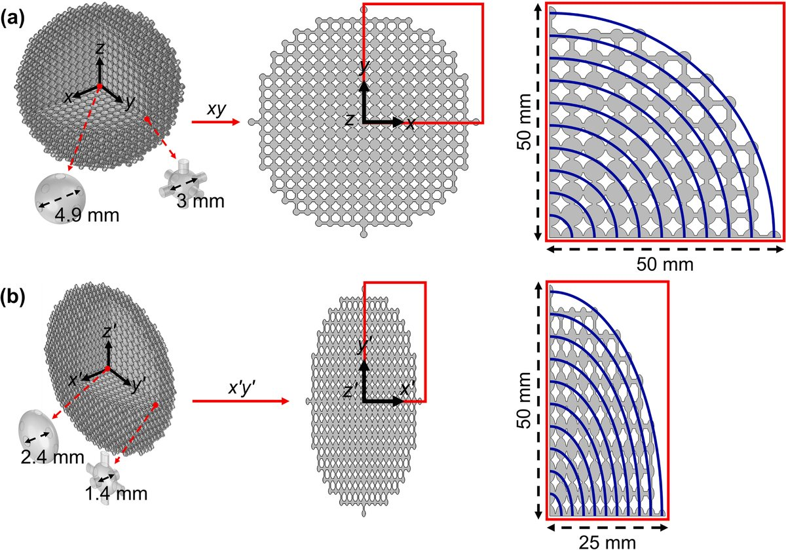
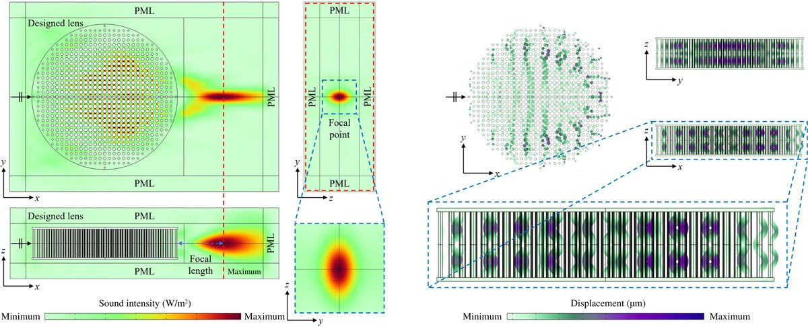
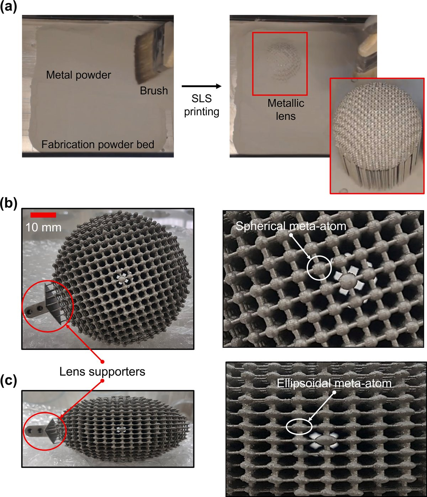
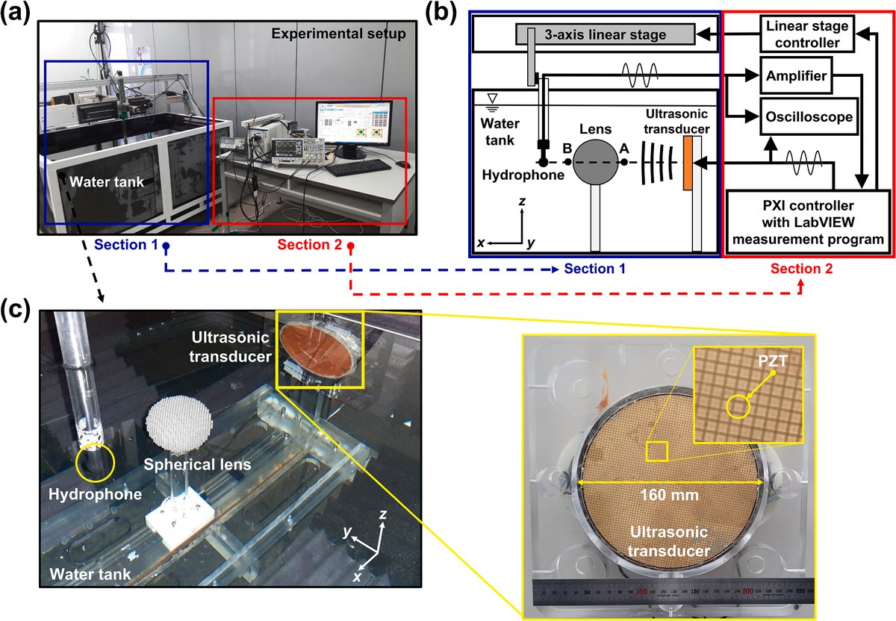
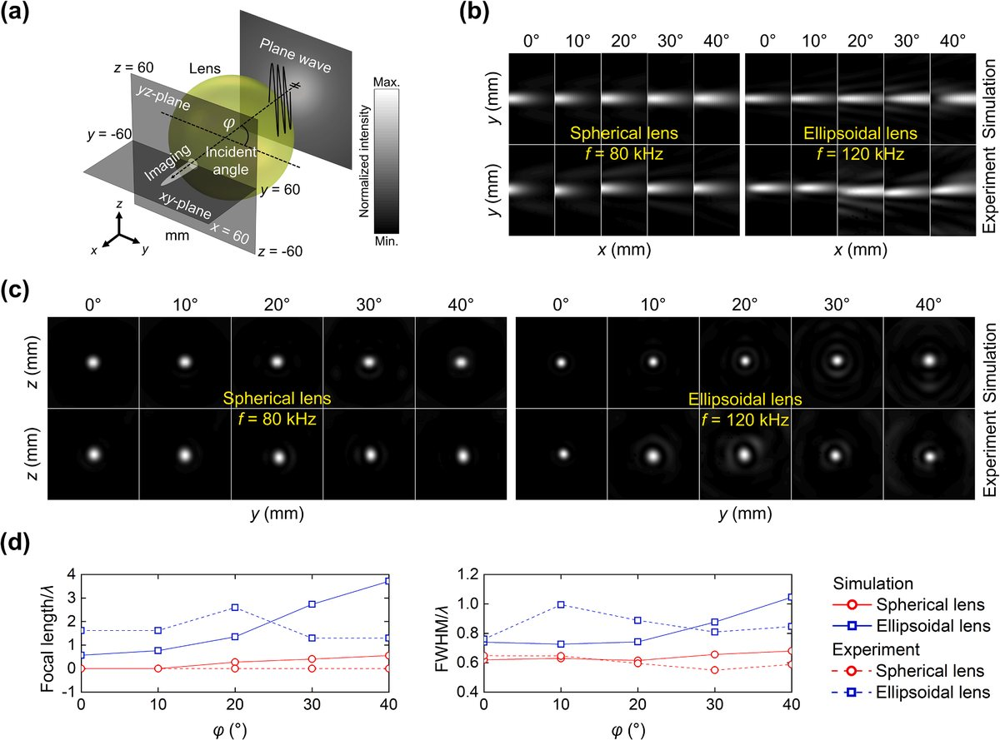
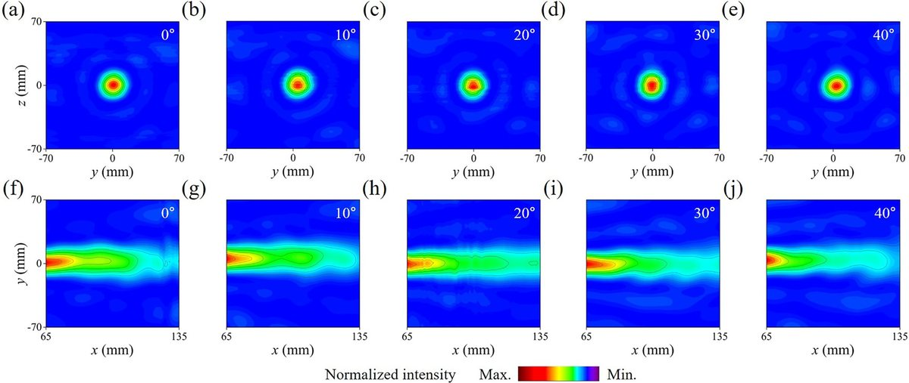
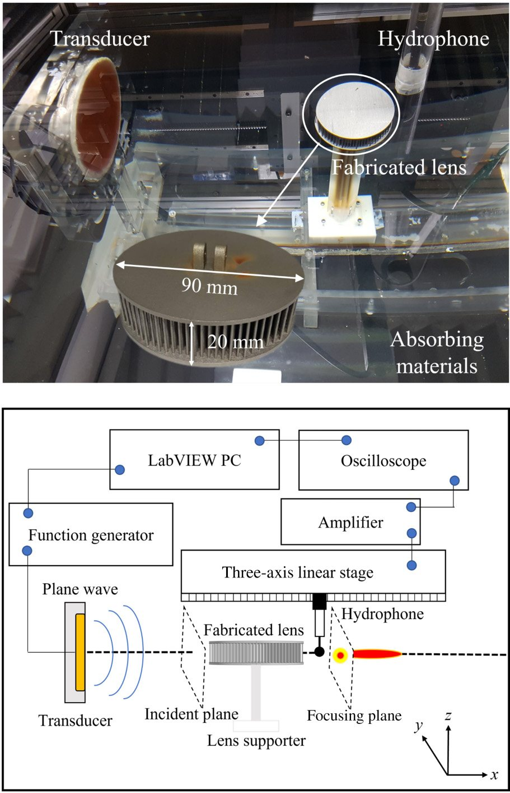
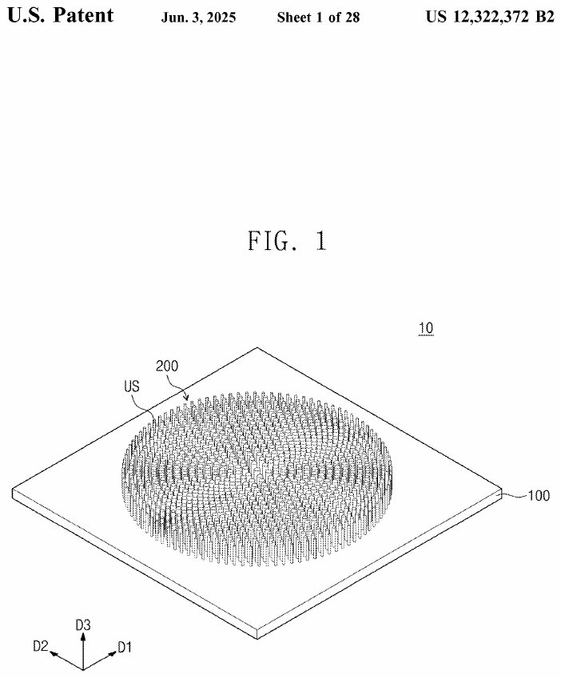

2022.12–2025.11
해군사관학교 교수부 공학처 조선공학과 · 조교수 (교수사관, 중위)
조선공학개론·선박계산·함정공학개론·기초역학 6개 학기 강의. 함정 관련 국방 연구개발 과제 수행(한화시스템, 국방과학연구소).
Overview
학부 연구보조원 시절부터 10건의 연구과제에서 수중·공기 중 음파를 제어하는 구조를 다뤘습니다. 수학·물리 모델로 구조를 설계하고, COMSOL Multiphysics로 음향–구조 연성 해석을 수행한 뒤, 3D 프린팅으로 제작해 수조와 무향실에서 직접 측정하는 한 사이클을 반복했습니다. 그 결과가 SCI급 논문 5편(제1저자 2편)과 등록특허 3건(국내 2, 미국 1)입니다.
해군사관학교 조선공학과에서 3년간 함정공학을 강의하고 한화시스템·국방과학연구소와 공동연구를 수행하며, 센서를 운용하는 수요군의 요구조건을 함께 익혔습니다.
Selected Work
기존 음향 렌즈는 좁은 주파수와 입사각에서만 동작합니다. 굴절률을 공간에 연속적으로 분포시키면 이 한계를 넘을 수 있다고 보고, 설계부터 수조 실측까지 전 과정을 직접 수행했습니다.
01 DESIGN

02 ANALYSIS

03 FABRICATION

04 TEST

RESULT — WIDE ANGLE

RESULT — BROADBAND

SETUP

Journal Publications
Patents

Conference Presentations
Quasi-3D Phononic Crystal GRIN Lens for Anisotropic Underwater Acoustic Focusing
Underwater Ultrasound Imaging via Metamaterial Lenses Composed of Phononic Crystals
구배 굴절률 메타물질을 이용한 음파 조작
Research Projects
| 기간 | 과제명 | 발주기관 | 역할 |
|---|---|---|---|
| 2025.03–2025.06 | 룬샷 경진대회 기획연구 | 국방과학연구소 | 참여연구원 |
| 2024.01–2024.12 | 미래 해군 함정 인공지능 학습 요소 연구 | 한화시스템 | 참여연구원 |
| 2021.03–2022.08 | 음향메타물질과 능동제어기술을 활용한 통합형 진동·소음 저감기술 개발 | 과학기술정보통신부 | 연구보조원 |
| 2020.09–2021.12 | 스피커폰에 적용 가능한 다층 구조 메타물질의 개발 | 광주과학기술원 | 연구보조원 |
| 2020.01–2020.02 | 직독식 수질복합센서 및 초분광영상 기반 인공지능 녹조 예측 기술 | 과학기술정보통신부 | 참여연구원 |
| 2019.12–2020.05 | 음향 룬버그 렌즈의 구조 해석 및 성능 테스트 | 중소벤처기업부 | 연구보조원 |
| 2019.07–2021.03 | 지진 피해 방지용 메타물질 개발 | 한국수력원자력 | 연구보조원 |
| 2019.07–2019.12 | 3차원 음향 룬버그 볼의 음향이득 측정에 관한 연구 | 한국과학창의재단 | 연구보조원 |
| 2018.03–2018.06 | 음향 메타렌즈 구조체 연구 | 과학기술정보통신부 | 연구보조원 |
| 2017.09–2017.11 | 음향 메타렌즈 구조체 연구 | 미래창조과학부 | 연구보조원 |
Tools
Experience
조선공학개론·선박계산·함정공학개론·기초역학 6개 학기 강의. 함정 관련 국방 연구개발 과제 수행(한화시스템, 국방과학연구소).
국가 R&D 과제 참여. 음향 트랜스듀서 구조 설계 및 공진 해석, 시제품 제작 및 수조 실험.
Education
지도교수 왕세명 · ISD Lab · 평점 3.9/4.5
학위논문 「Acoustic imaging with three-dimensional acoustic Luneburg metalens」
PDF
평점 4.1/4.5 · 3급 기관사 면허(해양수산부, MP-E3-22-0079) · 상선 승선실습
Test Environments